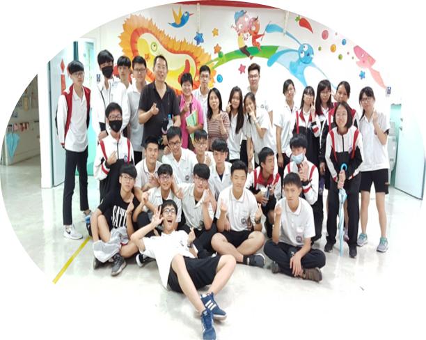

| 中原資管 | 王韻禎 | ||
| 生日 | 89/10/31 | ||
| 星座 | 天蠍座 | ||
| 興趣 | 閱讀 | ||
| 華麗跌倒，再拍拍屁股囂張站起 |
活動經歷
發票募款
過去我曾為傳愛服務社的一員，在此社團中我體驗到了許多新的事物，而這，就是我踏出舒適圈的第一步。

擔任自閉兒開發潛能中心志工
在此項活動中，我最大的體悟或許就是:這些孩童與我們相差並不遠，只不過看待世界的眼光不一樣罷了。
社團博覽會
這是擔任合氣道幹部所操辦的第一個活動，其中經歷了許多挫折、困難，曾經陷入低潮，所幸如今已克服。
迎新茶會
面對許多對於未來有期盼的新生，當時的我只想到:必須做到好，讓他們了解合氣道於他們究竟是否是個好選擇。
期初社員大會
與新生們一起遊玩的第一項活動，也是我第一次擔任活動副招，雖然途中有許多搞怪事蹟，所幸是個美好回憶。
猴硐貓村志工
這是環服小區隊第一次一起做校外志工服務，為的便是拓展我們的眼光，讓我們了解:服務不一定要在學校，也能夠外出學習。
大專盃
加入合氣道社後面臨的第一個比賽，雖練習過程當中時常碰壁，但仍從中學習到了許多，也順帶鍛鍊了抗壓能力。